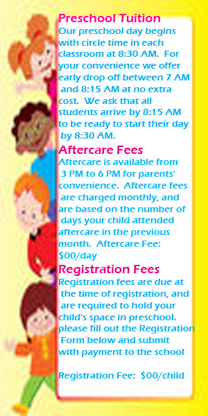

Early Childhood Education Centre

A world class preschool and daycare
COMMITTED TO WORLD-CLASS QUALITY EDUCATION

Internationale Preschool is a learning academy for boys and girls from ages 1.5 to 5.0 years old, it is an ELEMENTARY PREPARATORY preschool whose standard of education has been raised to as that of schools with fine academic reputation.
With a well-planned curriculum and careful selection of educative activities, the school is fully committed to develop a child's gift to the fullest potential and prepare him for his future academic challenges.
At LIP children will learn:
VALUES EDUCATION
INDEPENDENCE
CREATIVE GROWTH AND LEARNING (Arts and Crafts, Cultural Arts, Music & Movement)
CRITICAL THINKING PROCESSES (Mathematics, Science, Reading and Language )
SOCIAL AWARENESS AND CURRENT EVENTS (Social Science and Practical Arts
Offered in the beautifully remodeled Perl Mack Community Center building, the Preschool is a fully licensed preschool offering courses for all children ages three through pre-kindergarten. Pre-Registration is required and Tuition Free Preschool Grants are Available for the 4-day a week classes.
where children, teachers and staff from all over the world come together to share their cultures and gain a sense of international awareness. Our curriculum and philosophy emphasize mutual understanding and respect. Our international program opens a window on the world for young children.
Parents, you are invited to use this site to keep current on special events, check the academic calendar and discover ways through which you might become more personally involved at ECECentre.
We invite you to browse the Web pages that follow, and we hope that you enjoy learning more about us and the programs we offer.
Again, welcome to our school and to our Web site!